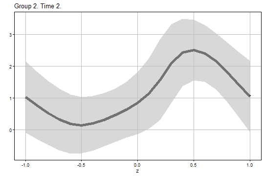
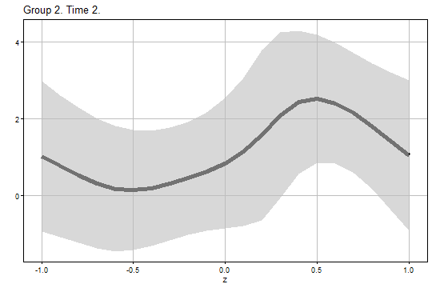
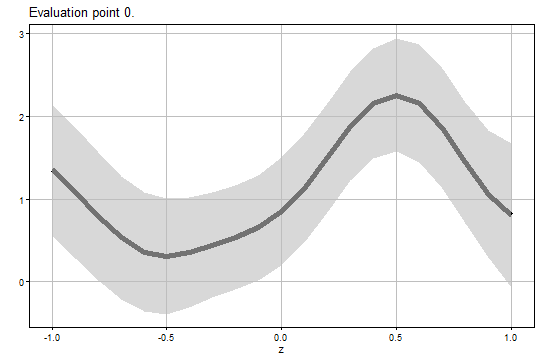
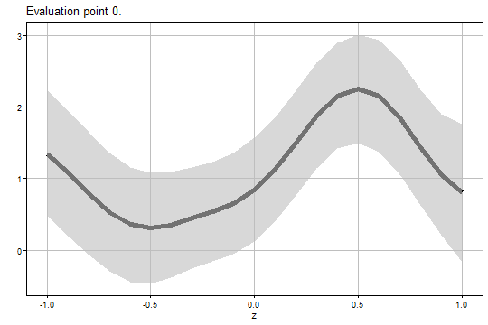

Getting Started with the didhetero Package
Shunsuke Imai (imai.shunsuke.57n@st.kyoto-u.ac.jp), Lei Qin (qinlei6d@unii.ac.jp), Takahide Yanagi (yanagi@econ.kyoto-u.ac.jp)
didhetero.RmdIntroduction
The didhetero package provides tools to construct doubly robust uniform confidence bands for the group-time conditional average treatment effect (CATT) function given a pre-treatment continuous covariate of interest and a variety of useful summary parameters in the staggered difference-in-differences (DiD) setup of Callaway and Sant’Anna (2021).
This package is useful for understanding the heterogeneity in treatment effects with respect to groups, periods, and covariate values in the staggered DiD setting.
The uniform inference methods are developed by Imai, Qin, and Yanagi (2025) “Doubly Robust Uniform Confidence Bands for Group-Time Conditional Average Treatment Effects in Difference-in-Differences”.
Installation
Get the package from GitHub:
# install.packages("devtools") # if needed
devtools::install_github("tkhdyanagi/didhetero", build_vignettes = TRUE)Package Functions
The didhetero package provides the following functions.
catt_gt_continuous(): It computes the doubly robust estimates and uniform confidence bands for the CATT function given a continuous pre-treatment covariate of interest.aggte_continuous(): It computes the doubly robust estimates and uniform confidence bands for the summary parameters that aggregate CATTs.
The catt_gt_continuous() Function
Arguments
The catt_gt_continuous() function has the following
arguments.
-
yname: The name of the outcome. -
tname: The name of the time periods. -
idname: The name of the cross-sectional IDs. -
gname: The name of the groups. “G = 0” indicates the never treated group. -
zname: The name of the scalar continuous covariate for which the group-time conditional average treatment effects are estimated -
xformla: A formula for the covariates to include in the model. It should be of the form~ X1 + X2.xformlashould includeznameas a covariate. -
data: The name of data.frame that contains the balanced panel data. -
zeval: The vector of the evaluation points z. -
gteval: The vector or matrix of the evaluation points g and t. If it is a vector, the first and second elements indicate g and t, respectively. If it is a matrix, the first and second columns indicate g’s and t’s, respectively. Default isNULLand gteval is constructed automatically. -
pretrend: Boolean for whether or not to perform the uniform inference for CATT in the pre-treatment periods (i.e., pre-trends in our framework). This parameter is only applicable if gteval isNULL. Default isFALSE. -
control_group: Which units to use the control group. Options are “nevertreated” and “notyettreated”. Default is “notyettreated”. -
anticipation: The number of time periods before participating in the treatment where units can anticipate participating in the treatment and therefore it can affect their untreated potential outcomes. Default is 0. -
alp: The significance level. Default is 0.05. -
bstrap: Boolean for whether or not to perform weighted bootstrapping. Default isTRUE. If bstrap isFALSE, only the analytical critical value is used. -
biters: The number of bootstrap iterations. This parameter is only applicable ifbstrap = TRUE. Default is 1000. -
porder: The polynomial order used for the second- and third-stage estimation. Options are 1 and 2, which correspond to the local linear and quadratic regressions, respectively. Default is 2. -
kernel: The kernel function used for the local polynomial regressions. Options are “gau” for the Gaussian kernel and “epa” for the Epanechnikov kernel. Default is “gau”. -
bwselect: The bandwidth selection method used for the second- and third-stage estimation. Options are “IMSE1”, “IMSE2”, “US1”, and “manual”. “IMSE1” and “IMSE2” mean the IMSE-optimal bandwidths for the local linear and quadratic regressions, respectively. “US1” means the rule-of-thumb undersmoothing bandwidth for the local linear regression. “manual” means the manual selection and bw should be specified in this case. Default is “IMSE1”, which is recommended for use withporder = 2. -
bw: The bandwidth used for the second- and third-stage estimation. Default isNULLand the bandwidth is chosen automatically. This parameter is only applicable if bwselect is “manual”, and should be a scalar or a vector whose length equals to the number of rows of gteval. -
uniformall: Boolean for whether or not to perform the uniform inference over (g, t, z). Default isTRUE, and the uniform inference over (g, t, z) is performed. IfFALSE, the uniform inference only over z is performed.
Returns
The catt_gt_continuous() function returns a list that
contains the following elements.
-
Estimate: A data.frame that contains the following elements.-
g: The group. -
t: The period. -
z: The covariate value. -
est: The doubly robust estimate for CATT. -
se: The standard error. -
ci1_lower: The lower bound of the analytical uniform confidence band. -
ci1_upper: The upper bound of the analytical uniform confidence band. -
ci2_lower: The lower bound of the bootstrap uniform confidence band. -
ci2_upper: The upper bound of the bootstrap uniform confidence band. -
bw: The bandwidth.
-
-
Figure1: A list that contains the ggplot elements for the analytical uniform confidence bands. -
Figure2: A list that contains the ggplot elements for the bootstrap uniform confidence bands.
The aggte_continuous() function
Arguments
The aggte_continuous() function has the following
arguments.
-
output: The output of thecatt_gt_continuousfunction. In doing so, several arguments and the uniform inference results for CATT from thecatt_gt_continuousfunction can be used in this function. In particular, the following are passed down from output:xformla,zeval,pretrend,control_group,anticipation,alp, andkernel. -
typeWhich type of the summary parameter is of interest. Options are “simple”, “dynamic”, “group”, and “calendar”. Default is “dynamic”. -
eval: The vector of the evaluation point specific to the chosen summary parameter. If type is set to “dynamic”, it is the evaluation point e. If type is set to “group”, it is the evaluation point g’. If type is set to “calendar”, it is the evaluation point t’. If type is set to “simple”, there is no evaluation point specific to this summary parameter, and eval should beNULL. Default isNULLand eval is constructed automatically. -
bstrap: Boolean for whether or not to perform multiplier bootstrapping. Default isTRUE. If bstrap isFALSE, only the analytical critical value is used. -
biters: The number of bootstrap iterations. This parameter is only applicable if bstrap isTRUE. Default is 1000. -
porder: The polynomial order used for the second- and third-stage estimation. Options are 1 and 2, which correspond to the local linear and quadratic regressions, respectively. Default is 2. -
bwselect: The bandwidth selection method used for the aggregation. Options are “IMSE1”, “IMSE2”, “US1”, and “manual”. “IMSE1” and “IMSE2” mean the IMSE-optimal bandwidths for the local linear and quadratic regressions, respectively. “US1” means the rule-of-thumb undersmoothing for the local linear regression. “manual” means the manual selection and bw should be specified in this case. Default is “IMSE1”, which is recommended for use withporder = 2. -
bw: The bandwidth used for the aggregation. Default isNULLand the bandwidth is chosen automatically. This parameter is only applicable if bwselect is “manual”, and should be a scalar or a vector whose length equals to the number of rows of eval. -
uniformall: Boolean for whether or not to perform the uniform inference over both eval and z. Default isTRUEand the uniform inference over eval and z is performed. IfFALSE, the uniform inference only over z is performed.
Returns
The aggte_continuous() function returns a list that
contains the following elements.
-
Estimate: A data.frame that contains the following elements.-
eval: The evaluation point specific to the chosen summary parameter. -
z: The covariate value. -
est: The doubly robust estimate of the chosen summary parameter. -
se: The standard error. -
ci1_lower: The lower bound of the analytical uniform confidence band. -
ci1_upper: The upper bound of the analytical uniform confidence band. -
ci2_lower: The lower bound of the bootstrap uniform confidence band. -
ci2_upper: The upper bound of the bootstrap uniform confidence band. - bw: The bandwidth.
-
-
Figure1: A list that contains the ggplot elements for the analytical uniform confidence bands. -
Figure2: A list that contains the ggplot elements for the bootstrap uniform confidence bands.
Examples
We begin by generating artificial data using the
datageneration() function.
# Load the package
library(didhetero)
# Generate artificial data
set.seed(1)
data <- datageneration(n = 500, tau = 4)We can see the variables’ names in the dataset with:
head(data)
#> id period Y G Z
#> 1 1 1 0.98412124 2 -0.6264538
#> 2 1 2 1.77999550 2 -0.6264538
#> 3 1 3 -0.02004389 2 -0.6264538
#> 4 1 4 6.43951734 2 -0.6264538
#> 5 2 1 3.37331543 2 0.1836433
#> 6 2 2 5.59684221 2 0.1836433We can run the catt_gt_continuous() function to compute
the doubly robust estimates and uniform confidence bands for the CATT
function given the continuous covariate
:
output1 <- catt_gt_continuous(
yname = "Y",
tname = "period",
idname = "id",
gname = "G",
zname = "Z",
xformla = ~ Z,
data = data,
zeval = seq(-1, 1, by = 0.1),
gteval = NULL,
pretrend = FALSE,
control_group = "notyettreated",
anticipation = 0,
alp = 0.05,
bstrap = TRUE,
biters = 1000,
porder = 2,
kernel = "gau",
bwselect = "IMSE1",
bw = NULL,
uniformall = TRUE
)The estimation and uniform inference results are:
head(output1$Estimate)
#> g t z est se ci1_lower ci1_upper ci2_lower ci2_upper bw
#> 1 2 2 -1.0 1.0264796 0.4222882 -0.09707295 2.150032 -0.9308918 2.983851 0.2547594
#> 2 2 2 -0.9 0.7652004 0.3980792 -0.29394090 1.824342 -1.0799584 2.610359 0.2547594
#> 3 2 2 -0.8 0.5273424 0.3785987 -0.47996845 1.534653 -1.2275212 2.282206 0.2547594
#> 4 2 2 -0.7 0.3192217 0.3636817 -0.64840072 1.286844 -1.3664996 2.004943 0.2547594
#> 5 2 2 -0.6 0.1813663 0.3498634 -0.74949043 1.112223 -1.4403045 1.803037 0.2547594
#> 6 2 2 -0.5 0.1441067 0.3353516 -0.74813968 1.036353 -1.4102999 1.698513 0.2547594The figure of the analytical uniform confidence band for and is:
output1$Figure1$g2_t2
The figure of the bootstrap uniform confidence band for and is:
output1$Figure2$g2_t2
We can run the aggte_continuous() function to compute
the doubly robust estimates and uniform confidence bands for the
event-study-type parameter given the continuous covariate
:
output2 <- aggte_continuous(
output = output1,
type = "dynamic",
eval = NULL,
bstrap = TRUE,
biters = 1000,
porder = 2,
bwselect = "IMSE1",
bw = NULL,
uniformall = TRUE
)The estimation and uniform inference results are:
head(output2$Estimate)
#> eval z est se ci1_lower ci1_upper ci2_lower ci2_upper bw
#> 1 0 -1.0 1.3522719 0.2938703 0.5590099 2.145534 0.47091346 2.233630 0.2296415
#> 2 0 -0.9 1.0763768 0.2923213 0.2872961 1.865457 0.19966408 1.953089 0.2296415
#> 3 0 -0.8 0.7894387 0.2849603 0.0202280 1.558649 -0.06519735 1.644075 0.2296415
#> 4 0 -0.7 0.5326729 0.2758289 -0.2118887 1.277235 -0.29457664 1.359922 0.2296415
#> 5 0 -0.6 0.3607236 0.2673598 -0.3609771 1.082424 -0.44112621 1.162573 0.2296415
#> 6 0 -0.5 0.3072095 0.2575102 -0.3879036 1.002323 -0.46510000 1.079519 0.2296415The figure of the analytical uniform confidence band for is:
output2$Figure1$eval0
The figure of the bootstrap Uuniform confidence band for is:
output2$Figure2$eval0
References
Callaway, B., & Sant’Anna, P. H. (2021). Difference-in-differences with multiple time periods. Journal of Econometrics, 225(2), 200-230. Link
Imai, S., Qin, L., & Yanagi, T. (2025). Doubly Robust Uniform Confidence Bands for Group-Time Conditional Average Treatment Effects in Difference-in-Differences. arXiv preprint arXiv:2305.02185. Link